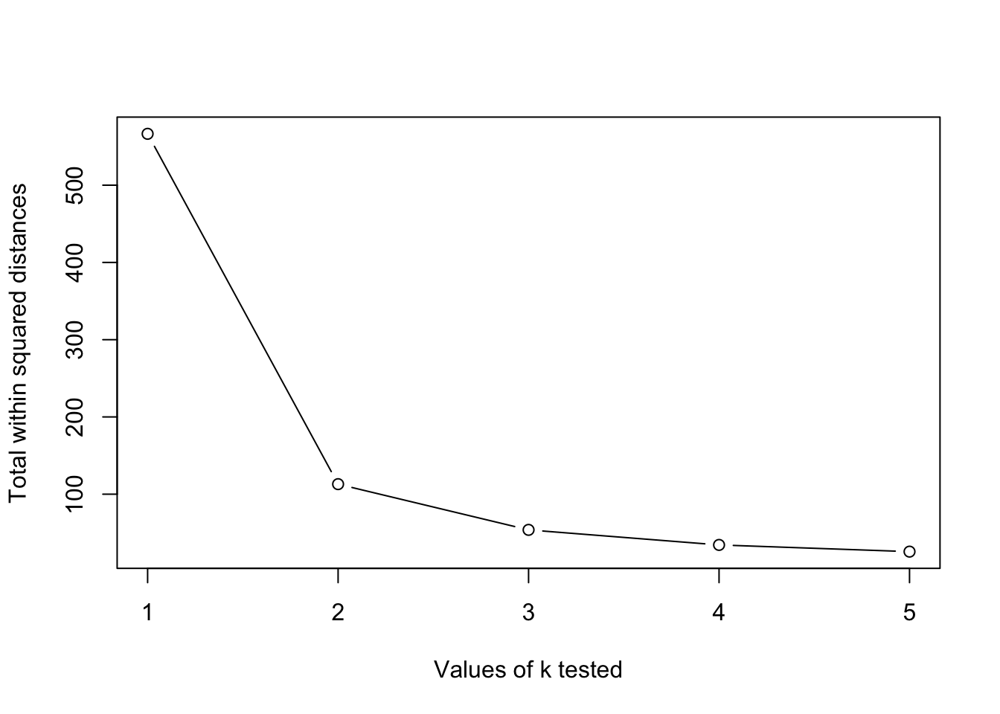
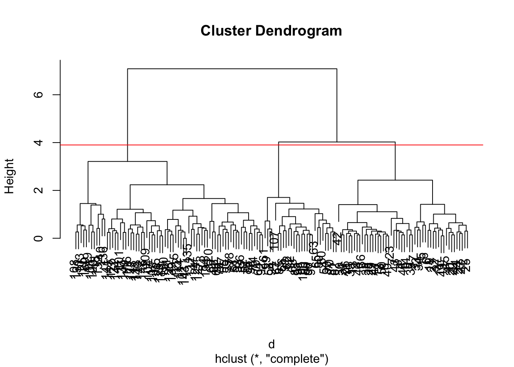
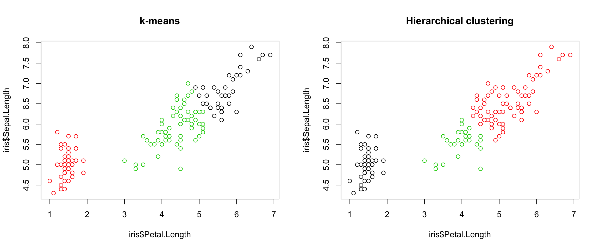
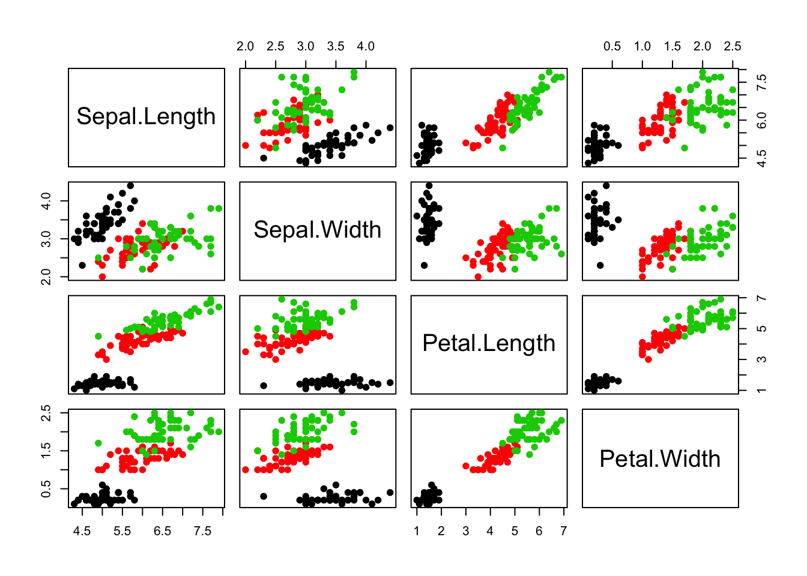
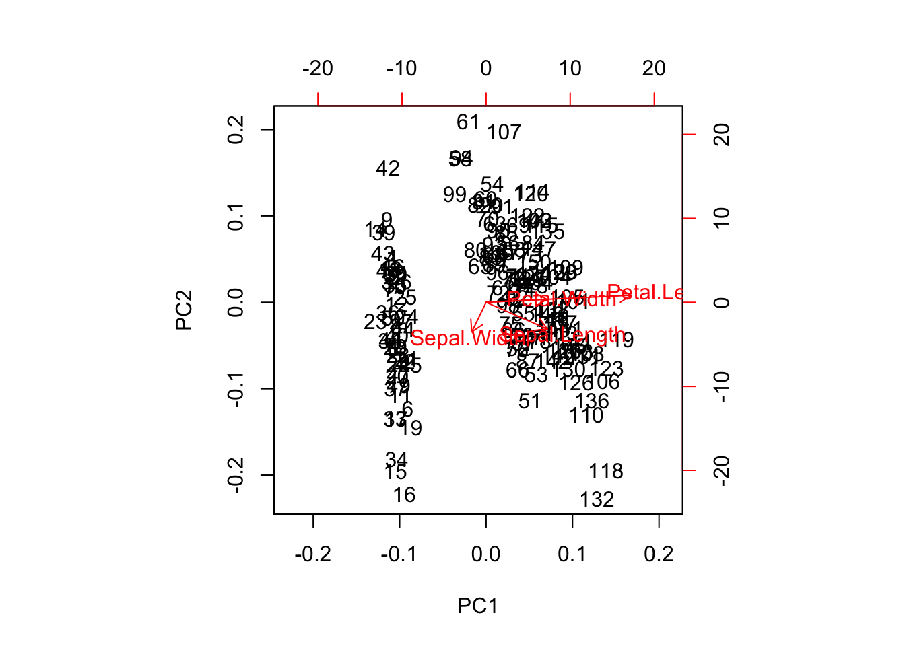
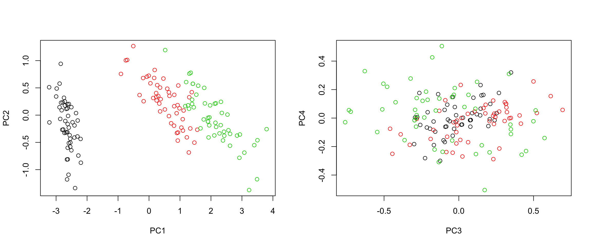
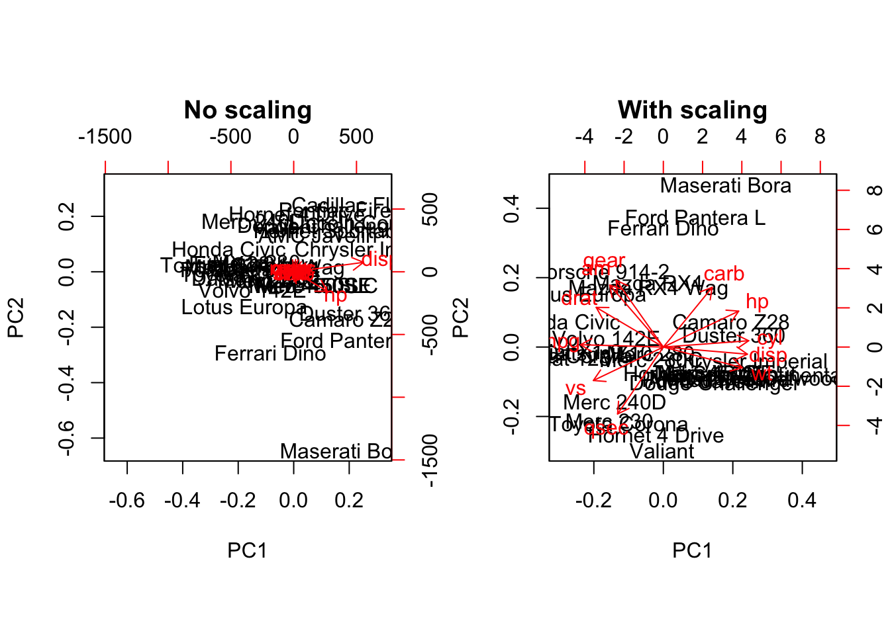
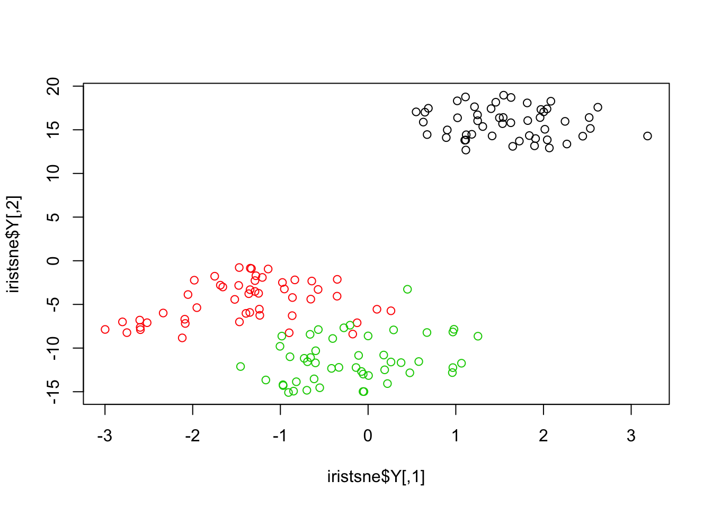

PhD Toolbox 2018 - Reproducible Research
Marco Chiapello
2018-01-22
Chapter 1 Preface
This course material is aimed at people who are already familiar with the R language and syntax, and who would like to get a hands-on introduction to reproducible research
1.1 Caution
This material is currently under development and is likely to change in the future.
1.2 Installation
A set of packages that are used, either directly or indirectly are provided in the first chapter. A complete session information with all packages used to compile this document is available at the end.
The source code for this document is available on GitHub at https://github.com/PhD-Toolbox-course/2018_PhD_Toolbox_course
A short URL for this book is http://bit.ly/intromlr
1.3 License
This material is licensed under the Creative Commons Attribution-ShareAlike 3.0 License. Some content is inspired by other sources though, see the Credit section in the material.
1.4 Contact
Feel free to contact me for any question or comments, preferably by opening an issue on GitHub.
Chapter 2 An Introduction to Machine Learning with R
This introductory workshop on machine learning with R is aimed at participants who are not experts in machine learning (introductory material will be presented as part of the course), but have some familiarity with scripting in general and R in particular. The workshop will offer a hands-on overview of typical machine learning applications in R, including unsupervised (clustering, such as hierarchical and k-means clustering, and dimensionality reduction, such as principal component analysis) and supervised (classification and regression, such as K-nearest neighbour and linear regression) methods. We will also address questions such as model selection using cross-validation. The material has an important hands-on component and readers should have a computer running R 3.4.1 or later.
2.1 Objectives and pre-requisites
The course aims at providing an accessible introduction to various machine learning methods and applications in R. The core of the courses focuses on unsupervised and supervised methods.
The course contains numerous exercises to provide numerous opportunity to apply the newly acquired material.
Participants are expected to be familiar with the R syntax and basic plotting functionality.
At the end of the course, the participants are anticipated to be able to apply what they have learnt, as well as feel confident enough to explore and apply new methods.
2.2 Why R?
R is one of the major languages for data science. It provides excellent visualisation features, which is essential to explore the data before submitting it to any automated learning, as well as assessing the results of the learning algorithm. Many R package for machine learning are available of the shelf and many modern methods in statistical learning are implemented in R as part of their development.
There are however other viable alternatives that benefit from similar advantages. If we consider python for example, the scikit-learn software provides all the tools that we will discuss in this course.
2.3 Overview of machine learning (ML)
In supervised learning (SML), the learning algorithm is presented with labelled example inputs, where the labels indicate the desired output. SML itself is composed of classification, where the output is categorical, and regression, where the output is numerical.
In unsupervised learning (UML), no labels are provided, and the learning algorithm focuses solely on detecting structure in unlabelled input data.
Note that there are also semi-supervised learning approaches that use labelled data to inform unsupervised learning on the unlabelled data to identify and annotate new classes in the dataset (also called novelty detection).
Reinforcement learning, the learning algorithm performs a task using feedback from operating in a real of synthetic environment.
2.4 Material and methods
2.4.1 Example data
- Observations, examples or simply data points along the rows
- Features or variables along the columns
Using the iris data as an example, for UML, we would have 4 features for each unlabelled example.
| Sepal.Length | Sepal.Width | Petal.Length | Petal.Width |
|---|---|---|---|
| 5.1 | 3.5 | 1.4 | 0.2 |
| 4.9 | 3.0 | 1.4 | 0.2 |
| 4.7 | 3.2 | 1.3 | 0.2 |
| 4.6 | 3.1 | 1.5 | 0.2 |
| 5.0 | 3.6 | 1.4 | 0.2 |
| 5.4 | 3.9 | 1.7 | 0.4 |
The same dataset used in the context of SML contains an additional column of labels, documenting the outcome or class of each example.
| Species | Sepal.Length | Sepal.Width | Petal.Length | Petal.Width |
|---|---|---|---|---|
| setosa | 5.1 | 3.5 | 1.4 | 0.2 |
| setosa | 4.9 | 3.0 | 1.4 | 0.2 |
| setosa | 4.7 | 3.2 | 1.3 | 0.2 |
| setosa | 4.6 | 3.1 | 1.5 | 0.2 |
| setosa | 5.0 | 3.6 | 1.4 | 0.2 |
| setosa | 5.4 | 3.9 | 1.7 | 0.4 |
The different datasets that are used throughout the course are collected and briefly described in the short Data chapter.
2.4.2 Packages
We will be using, directly or indirectly, the following packages through the chapters:
- caret
- ggplot2
- mlbench
- class
- caTools
- randomForst
- impute
- ranger
- kernlab
- class
- glmnet
- naivebayes
- rpart
- rpart.plot
See the full session informtion for more details.
Chapter 3 Unsupervised Learning
3.1 Introduction
In unsupervised learning (UML), no labels are provided, and the learning algorithm focuses solely on detecting structure in unlabelled input data. One generally differentiates between
Clustering, where the goal is to find homogeneous subgroups within the data; the grouping is based on distance between observations.
Dimensionality reduction, where the goal is to identify patterns in the features of the data. Dimensionality reduction is often used to facilitate visualisation of the data, as well as a pre-processing method before supervised learning.
UML presents specific challenges and benefits:
- there is no single goal in UML
- there is generally much more unlabelled data available than labelled data.
3.2 k-means clustering
The k-means clustering algorithms aims at partitioning n observations into a fixed number of k clusters. The algorithm will find homogeneous clusters.
In R, we use
where
xis a numeric data matrixcentersis the pre-defined number of clusters- the k-means algorithm has a random component and can be repeated
nstarttimes to improve the returned model
Challenge:
- To learn about k-means, let’s use the
iriswith the sepal and petal length variables only (to facilitate visualisation). Create such a data matrix and name itx
- Run the k-means algorithm on the newly generated data
x, save the results in a new variablecl, and explore its output when printed.
- The actual results of the algorithms, i.e. the cluster membership can be accessed in the
clusterselement of the clustering result output. Use it to colour the inferred clusters to generate a figure like shown below.
Figure 3.1: k-means algorithm on sepal and petal lengths
3.2.1 How does k-means work
Initialisation: randomly assign class membership
Figure 3.2: k-means random intialisation
Iteration:
- Calculate the centre of each subgroup as the average position of all observations is that subgroup.
- Each observation is then assigned to the group of its nearest centre.
It’s also possible to stop the algorithm after a certain number of iterations, or once the centres move less than a certain distance.
par(mfrow = c(1, 2))
plot(x, col = init)
centres <- sapply(1:3, function(i) colMeans(x[init == i, ], ))
centres <- t(centres)
points(centres[, 1], centres[, 2], pch = 19, col = 1:3)
tmp <- dist(rbind(centres, x))
tmp <- as.matrix(tmp)[, 1:3]
ki <- apply(tmp, 1, which.min)
ki <- ki[-(1:3)]
plot(x, col = ki)
points(centres[, 1], centres[, 2], pch = 19, col = 1:3)
Figure 3.3: k-means iteration: calculate centers (left) and assign new cluster membership (right)
Termination: Repeat iteration until no point changes its cluster membership.

3.2.2 Model selection
Due to the random initialisation, one can obtain different clustering results. When k-means is run multiple times, the best outcome, i.e. the one that generates the smallest total within cluster sum of squares (SS), is selected. The total within SS is calculated as:
For each cluster results:
- for each observation, determine the squared euclidean distance from observation to centre of cluster
- sum all distances
Note that this is a local minimum; there is no guarantee to obtain a global minimum.
Challenge:
Repeat kmeans on our
xdata multiple times, setting the number of iterations to 1 or greater and check whether you repeatedly obtain the same results. Try the same with random data of identical dimensions.
cl1 <- kmeans(x, centers = 3, nstart = 10)
cl2 <- kmeans(x, centers = 3, nstart = 10)
table(cl1$cluster, cl2$cluster)##
## 1 2 3
## 1 58 0 0
## 2 0 41 0
## 3 0 0 51cl1 <- kmeans(x, centers = 3, nstart = 1)
cl2 <- kmeans(x, centers = 3, nstart = 1)
table(cl1$cluster, cl2$cluster)##
## 1 2 3
## 1 0 0 41
## 2 0 51 0
## 3 58 0 0set.seed(42)
xr <- matrix(rnorm(prod(dim(x))), ncol = ncol(x))
cl1 <- kmeans(xr, centers = 3, nstart = 1)
cl2 <- kmeans(xr, centers = 3, nstart = 1)
table(cl1$cluster, cl2$cluster)##
## 1 2 3
## 1 46 0 6
## 2 1 51 0
## 3 0 1 45diffres <- cl1$cluster != cl2$cluster
par(mfrow = c(1, 2))
plot(xr, col = cl1$cluster, pch = ifelse(diffres, 19, 1))
plot(xr, col = cl2$cluster, pch = ifelse(diffres, 19, 1))Figure 3.4: Different k-means results on the same (random) data
3.2.3 How to determine the number of clusters
- Run k-means with
k=1,k=2, …,k=n - Record total within SS for each value of k.
- Choose k at the elbow position, as illustrated below.

Challenge
Calculate the total within sum of squares for k from 1 to 5 for our
xtest data, and reproduce the figure above.
3.3 Hierarchical clustering
3.3.1 How does hierarchical clustering work
Initialisation: Starts by assigning each of the n point its own cluster
Iteration
- Find the two nearest clusters, and join them together, leading to n-1 clusters
- Continue merging cluster process until all are grouped into a single cluster
Termination: All observations are grouped within a single cluster.
Figure 3.5: Hierarchical clustering: initialisation (left) and colour-coded results after iteration (right).
The results of hierarchical clustering are typically visualised along a dendrogram, where the distance between the clusters is proportional to the branch lengths.
Figure 3.6: Visualisation of the hierarchical clustering results on a dendrogram
In R:
- Calculate the distance using
dist, typically the Euclidean distance. - Hierarchical clustering on this distance matrix using
hclust
Challenge
Apply hierarchical clustering on the
irisdata and generate a dendrogram using the dedicatedplotmethod.
##
## Call:
## hclust(d = d)
##
## Cluster method : complete
## Distance : euclidean
## Number of objects: 1503.3.2 Defining clusters
After producing the hierarchical clustering result, we need to cut the tree (dendrogram) at a specific height to defined the clusters. For example, on our test dataset above, we could decide to cut it at a distance around 1.5, with would produce 2 clusters.
Figure 3.7: Cutting the dendrogram at height 1.5.
In R we can us the cutree function to
- cut the tree at a specific height:
cutree(hcl, h = 1.5) - cut the tree to get a certain number of clusters:
cutree(hcl, k = 2)
Challenge
- Cut the iris hierarchical clustering result at a height to obtain 3 clusters by setting
h.- Cut the iris hierarchical clustering result at a height to obtain 3 clusters by setting directly
k, and verify that both provide the same results.

## [1] 1 1 1 1 1 1 1 1 1 1 1 1 1 1 1 1 1 1 1 1 1 1 1 1 1 1 1 1 1 1 1 1 1 1 1
## [36] 1 1 1 1 1 1 1 1 1 1 1 1 1 1 1 2 2 2 3 2 3 2 3 2 3 3 3 3 2 3 2 3 3 2 3
## [71] 2 3 2 2 2 2 2 2 2 3 3 3 3 2 3 2 2 2 3 3 3 2 3 3 3 3 3 2 3 3 2 2 2 2 2
## [106] 2 3 2 2 2 2 2 2 2 2 2 2 2 2 2 2 2 2 2 2 2 2 2 2 2 2 2 2 2 2 2 2 2 2 2
## [141] 2 2 2 2 2 2 2 2 2 2## [1] 1 1 1 1 1 1 1 1 1 1 1 1 1 1 1 1 1 1 1 1 1 1 1 1 1 1 1 1 1 1 1 1 1 1 1
## [36] 1 1 1 1 1 1 1 1 1 1 1 1 1 1 1 2 2 2 3 2 3 2 3 2 3 3 3 3 2 3 2 3 3 2 3
## [71] 2 3 2 2 2 2 2 2 2 3 3 3 3 2 3 2 2 2 3 3 3 2 3 3 3 3 3 2 3 3 2 2 2 2 2
## [106] 2 3 2 2 2 2 2 2 2 2 2 2 2 2 2 2 2 2 2 2 2 2 2 2 2 2 2 2 2 2 2 2 2 2 2
## [141] 2 2 2 2 2 2 2 2 2 2## [1] TRUEChallenge
Using the same value
k = 3, verify if k-means and hierarchical clustering produce the same results on theirisdata.Which one, if any, is correct?
km <- kmeans(iris[, 1:4], centers = 3, nstart = 10)
hcl <- hclust(dist(iris[, 1:4]))
table(km$cluster, cutree(hcl, k = 3))##
## 1 2 3
## 1 0 38 0
## 2 50 0 0
## 3 0 34 28par(mfrow = c(1, 2))
plot(iris$Petal.Length, iris$Sepal.Length, col = km$cluster, main = "k-means")
plot(iris$Petal.Length, iris$Sepal.Length, col = cutree(hcl, k = 3), main = "Hierarchical clustering")
##
## 1 2 3
## setosa 0 50 0
## versicolor 2 0 48
## virginica 36 0 14##
## 1 2 3
## setosa 50 0 0
## versicolor 0 23 27
## virginica 0 49 13.4 Pre-processing
Many of the machine learning methods that are regularly used are sensitive to difference scales. This applies to unsupervised methods as well as supervised methods, as we will see in the next chapter.
A typical way to pre-process the data prior to learning is to scale the data, or apply principal component analysis (next section). Scaling assures that all data columns have mean 0 and standard deviate 1.
In R, scaling is done with the scale function.
Challenge
Using the
mtcarsdata as an example, verify that the variables are of different scales, then scale the data. To observe the effect different scales, compare the hierarchical clusters obtained on the original and scaled data.
## mpg cyl disp hp drat wt
## 20.090625 6.187500 230.721875 146.687500 3.596563 3.217250
## qsec vs am gear carb
## 17.848750 0.437500 0.406250 3.687500 2.8125003.5 Principal component analysis (PCA)
Dimensionality reduction techniques are widely used and versatile techniques that can be used o
- find structure in features
- pre-processing for other ML algorithms, and
- as an aid in visualisation.
The basic principle of dimensionality reduction techniques is to transform the data into a new space that summarise properties of the whole data set along a reduced number of dimensions. These are then ideal candidates used to visualise the data along these reduced number of informative dimensions.
3.5.1 How does it work
Principal Component Analysis (PCA) is a technique that transforms the original n-dimensional data into a new n-dimensional space.
- These new dimensions are linear combinations of the original data, i.e. they are composed of proportions of the original variables.
- Along these new dimensions, called principal components, the data expresses most of its variability along the first PC, then second, …
- Principal components are orthogonal to each other, i.e. non-correlated.
Figure 3.8: Original data (left). PC1 will maximise the variability while minimising the residuals (centre). PC2 is orthogonal to PC1 (right).
In R, we can use the prcomp function.
Let’s explore PCA on the iris data. While it contains only 4 variables, is already becomes difficult to visualise the 3 groups along all these dimensions.

Let’s use PCA to reduce the dimension.
## Importance of components:
## PC1 PC2 PC3 PC4
## Standard deviation 2.0563 0.49262 0.2797 0.15439
## Proportion of Variance 0.9246 0.05307 0.0171 0.00521
## Cumulative Proportion 0.9246 0.97769 0.9948 1.00000A summary of the prcomp output shows that along PC1 along, we are able to retain over 92% of the total variability in the data.
Figure 3.9: Iris data along PC1.
3.5.2 Visualisation
A biplot features all original points re-mapped (rotated) along the first two PCs as well as the original features as vectors along the same PCs. Feature vectors that are in the same direction in PC space are also correlated in the original data space.

One important piece of information when using PCA is the proportion of variance explained along the PCs, in particular when dealing with high dimensional data, as PC1 and PC2 (that are generally used for visualisation), might only account for an insufficient proportion of variance to be relevant on their own.
In the code chunk below, I extract the standard deviations from the PCA result to calculate the variances, then obtain the percentage of and cumulative variance along the PCs.
## [1] 0.924618723 0.053066483 0.017102610 0.005212184## [1] 0.9246187 0.9776852 0.9947878 1.0000000Challenge
- Repeat the PCA analysis on the iris dataset above, reproducing the biplot and preparing a barplot of the percentage of variance explained by each PC.
- It is often useful to produce custom figures using the data coordinates in PCA space, which can be accessed as
xin theprcompobject. Reproduce the PCA plots below, along PC1 and PC2 and PC3 and PC4 respectively.

3.5.3 Data pre-processing
We haven’t looked at other prcomp parameters, other that the first one, x. There are two other ones that are or importance, in particular in the light of the section on pre-processing above, which are center and scale.. The former is set to TRUE by default, while the second one is set the FALSE.
Challenge
Repeat the analysis comparing the need for scaling on the
mtcarsdataset, but using PCA instead of hierarchical clustering. When comparing the two.
par(mfrow = c(1, 2))
biplot(prcomp(mtcars, scale = FALSE), main = "No scaling") ## 1
biplot(prcomp(mtcars, scale = TRUE), main = "With scaling") ## 2
Without scaling,disp and hp are the features with the highest loadings along PC1 and 2 (all others are negligible), which are also those with the highest units of measurement. Scaling removes this effect.
3.5.4 Final comments on PCA
Real datasets often come with missing values. In R, these should be encoded using NA. Unfortunately, PCA cannot deal with missing values, and observations containing NA values will be dropped automatically. This is a viable solution only when the proportion of missing values is low.
It is also possible to impute missing values. This is described in greater details in the Data pre-processing section in the supervised machine learning chapter.
Finally, we should be careful when using categorical data in any of the unsupervised methods described above. Categories are generally represented as factors, which are encoded as integer levels, and might give the impression that a distance between levels is a relevant measure (which it is not, unless the factors are ordered). In such situations, categorical data can be dropped, or it is possible to encode categories as binary dummy variables. For example, if we have 3 categories, say A, B and C, we would create two dummy variables to encode the categories as:
| x | y | |
|---|---|---|
| A | 1 | 0 |
| B | 0 | 1 |
| C | 0 | 0 |
so that the distance between each category are approximately equal to 1.
3.6 t-Distributed Stochastic Neighbour Embedding
t-Distributed Stochastic Neighbour Embedding (t-SNE) is a non-linear dimensionality reduction technique, i.e. that different regions of the data space will be subjected to different transformations. t-SNE will compress small distances, thus bringing close neighbours together, and will ignore large distances. It is particularly well suited for very high dimensional data.
In R, we can use the Rtsne function from the Rtsne. Before, we however need to remove any duplicated entries in the dataset.
library("Rtsne")
uiris <- unique(iris[, 1:5])
iristsne <- Rtsne(uiris[, 1:4])
plot(iristsne$Y, col = uiris$Species)
As with PCA, the data can be scaled and centred prior the running t-SNE (see the pca_center and pca_scale arguments). The algorithm is stochastic, and will produce different results at each repetition.
3.6.1 Parameter tuning
t-SNE (as well as many other methods, in particular classification algorithms) has two important parameters that can substantially influence the clustering of the data
- Perplexity: balances global and local aspects of the data.
- Iterations: number of iterations before the clustering is stopped.
It is important to adapt these for different data. The figure below shows a 5032 by 20 dataset that represent protein sub-cellular localisation.

As a comparison, below are the same data with PCA (left) and t-SNE (right).